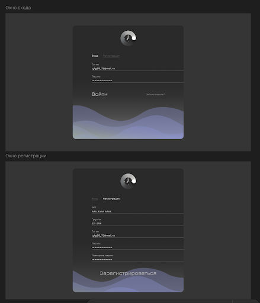
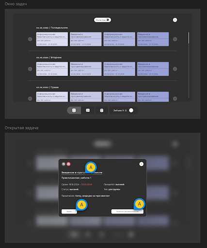

Целью нашего проекта является увеличение продуктивности студентов и сотрудников, обеспечение более удобного и эффективного взаимодействия с сервисами Московского политеха за счёт их разработки, внедрения и модернизации. В рамках проекта мы рассматриваем несколько подпроектов, среди них: личный кабинет Московского политеха, мобильное приложение личного кабинета на базе Android и IOS, сервис визуализации данных контакт-центра Московского политеха на базе Grafana, сервис «Политайм».